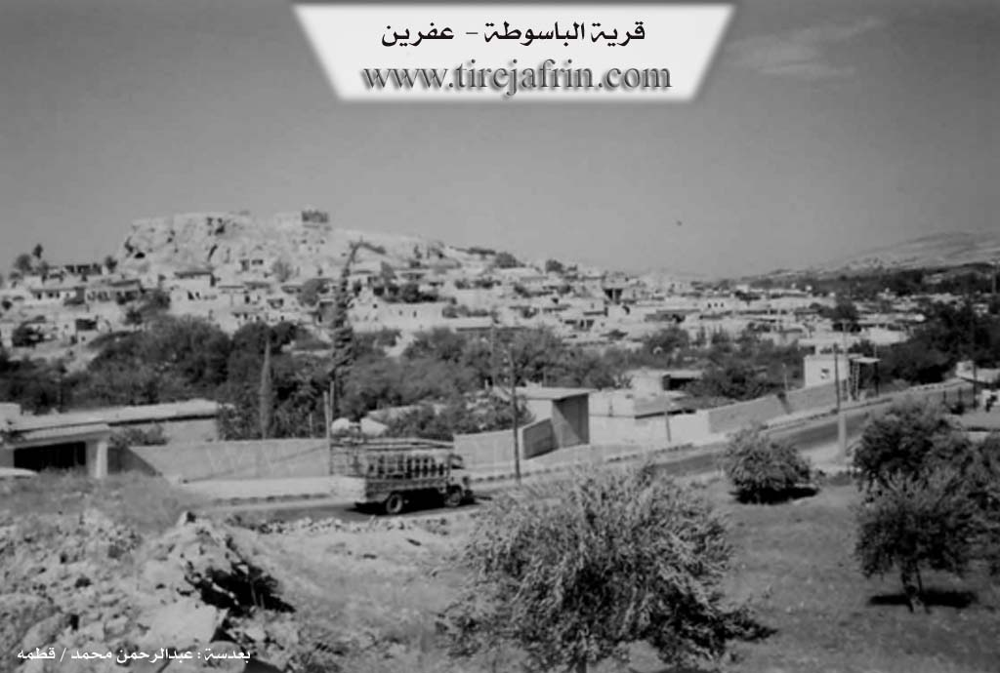
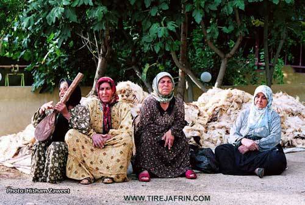
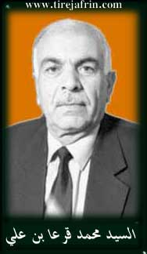

General Information
Nahiya (Subdistrict)
Efrîn
Also Known As
Basuta, Basutah, Basûta, Basûte, Basûtê, الباسوطة, باسوطه
Tribes
Berwarî, Canbolat, Emîrat, Genc, Mend, Reşkotî, Reşwanî, Rûbarî, Xaldî, Şêrawî
Families, Clans, etc.
Betal Axa, Betêl, Cel'ût, Ebrûş, Emer, Hemşo, Hesîb, Hisir, Malê Betêl, Malê Ebrûş, Malê Emer, Malê Genca, Malê Hebûn, Malê Hemzê, Malê Hemşo, Malê Hisrîn, Malê Kullo, Malê Mendî, Malê Şemûnê, Mîna Xobarî, Sibhî Elo, Silêmanî Kuto, Topoşane, Xêlit, Zekî Axa, Çolo

Photos




Basic Information about Basûtê
Source: Ax û Welat
Etymology: From Aramaic "Ba" (House) and "Sûta" (Seat or Bounty), meaning "House of Bounty"; alternatively interpreted in Kurdish as "Ba" (Wind) and "Sot" (Burn/Hot), meaning "Hot Wind"
Foundation Date/Period: Stone Age (12,000 BC) traces; Aramaic settlement 1500 BC; Fortress first recorded in texts 1145 AD
Springs: Serê Kaniyê
Hills: Çiyayê Lêlûn, Çiyayê Bûzîkê, Gumitka, Girê Basûtê
Shrines: Tirba Betal Axa
Ruins: Kela Basûtê, Kela Semanê, Endarê, Eyn Darê, Birc Ebdalo
Other Landmarks: Deşta Cûmê, Çemê Efrînê
Source: Afrin Zeyton
Springs: Kaniya Basûtê
Hills: Cebel Ehlam
Shrines: Ziyaret
Ruins: Keleha Basûtê
Other Landmarks: Deşta Jûmê, Burcê
Summaries
I. Summary from TirejAfrin Site (English) of Basûtê
Source: https://www.tirejafrin.com/site/kura%20afrin%20markaz-basuta.htm
The following is stated in the book جبل الكرد (عفرين) دراسة جغرافية Çiyayê Kurmênc (Efrîn): A Geographical Study by د. محمد عبدو علي Dr. Mihemed Ebdo Elî:
Baste, Basûtê / 4160 inhabitants, 650 AH, 9km, 240m /:
I believe the word is of Kurdish origin, where "Ba" means wind, and "St" means sharp or burning. The location of the village of Basûtê in the plain beside the mountain gorge exposes it to cold northern winds in winter, sometimes causing severe damage to fruit orchards. However, Kheireddine al-Asadi states regarding the name, quoting Father Shalhat, that it is from the Aramaic "Fşûta" which means the flat or the stray; from this, the name might mean "House of the Stray" (Comparative Encyclopedia of Aleppo, Vol 2, p 32). However, I believe this interpretation is unsuccessful.
Basûtê is a large village surrounded by the river of Çemê Efrîn from the west and south. The spring of Kaniya Basûtê emerges in its center with a flow of 15 liters per second. Its modern houses have extended towards the north and east, climbing up the slopes of Çiyayê Lêlûn. It contains a small factory for manufacturing some plastic necessities. It is a beautiful touristic village situated amidst vast fields of fruit tree orchards. Some civil services are available, including a health center, telephone, municipality, and a gas station. It is one of the well known summer resorts in the north of Heleb and is famous for its delicious pomegranates. Basûtê has an eventful history, as its citadel was a center for Betal Axa Genc in the early nineteenth century during their rule over the districts of Çiyayê Kurmênc and the villages north of Heleb.
The following is stated in the book عفرين .... نهرها وروابيها الخضراء Efrîn... Her River and Her Green Hills by the writer عبدالرحمن محمد Ebdulrehman Mihemed from the village of Qetme:
Basûtê is a village in the valley of Efrîn, administratively belonging to the Efrîn Center subdistrict, Efrîn area, Heleb governorate. It is a large village located about 9km south of the city of Efrîn on flat, agriculturally fertile land surrounded by orchards and fruit and pomegranate trees from all sides. It is prosperous and beautiful.
It is bordered to the north by a vast agriculturally fertile plain planted with pomegranate, apple, and almond trees, as well as the village of Ên Darê and the archaeological site of Girê Ên Darê. To the south, it is bordered by the rugged mountain range of Çiyayê Lêlûn and Çiyayê Seman and the village of Burç Ebdalo. To the east, it is bordered by the range of Çiyayê Lêlûn and Çiyayê Seman and the village of Kîmar. To the west, it is bordered by the plain and course of the valley of Çemê Efrîn, Çiyayê Bûzîkê, and the village of Kefîr.
The number of its houses is about 400 houses, and its age is about 500 years according to the account of one of the elderly residents of the village. Its old houses are of stone and mud with wooden roofs. As for the modern ones, the village has expanded structurally to the east, west, and south beside its main road coming from Efrîn towards the village of Xezawiyê, Burç Ebdalo, and the village of Îska.
An electricity network is available, as well as drinking water taken from the water spring flowing from the bottom of Çiyayê Lêlûn. Beside this spring is a beautiful tourist restaurant. Water is also available from artesian wells dug within the houses and nearby orchards. The village contains a primary and middle school, a post and telephone center, and a mosque in the center of the village. A municipality was established there in the year 1991 and was built on a height in the middle of the village on the summit of Kelha Basûtê. The village municipality serves the village and dependent villages such as Burç Ebdalo, Ên Darê, and Kîmar with several paved streets.
The river of Çemê Efrîn passes a few meters to the west of the village to traverse a gorge confined between Çiyayê Lêlûn from the east and Çiyayê Bûzîkê in the west. A regulatory dam was constructed on the valley at the end of the gorge dug near the village of Burç Ebdalo. As for the north and west of the village, there is a flat, fertile, and vast plain connecting the villages of Basûtê, Ên Darê, and Qerzîhel. There are also several modern houses on both sides of the road east of the village.
Most of its inhabitants work in agriculture, such as the rainfed cultivation of grains and legumes. It is also famous for the irrigated cultivation of fruits, pomegranates, almonds, summer vegetables, cotton, and sugar beet using water from Çemê Efrîn and artesian wells within the orchards, alongside raising sheep, goats, and other activities. There are several restaurants and tourist cafes, the most important being Serê Kaniyê beside the spring of Kaniya Basûtê. Basûtê is considered one of the most important tourist areas in the Heleb governorate. Among its most important families is the family of Betal Axa and currently his grandson Zekî Axa.
The spring of Kaniya Basûtê is a spring in the valley of Efrîn, belonging to the Center subdistrict, Efrîn area, Heleb governorate. The waters of the spring flow from the bottom of Çiyayê Lêlûn and Çiyayê Seman on the northern and western slopes of the mentioned mountains. The spring forms a lake at the bottom of the valley and then branches into two branches. The first heads north through the orchards and is utilized for irrigating the orchards. The second continues its course westward and ends in the river of Çemê Efrîn southwest of the village. The residents of the village have benefited from the spring water for drinking, daily use, and irrigating the orchards around the village since ancient times. On the northern side, the restaurant of Serê Kaniyê in Basûtê was established, which is visited every Friday and Sunday during the spring and summer seasons by thousands of visitors from the city of Heleb and its countryside. The spring and its village are considered among the tourist areas in the Heleb governorate.
Village Mukhtar: Mihemed Omer / Ebû Ebdo
Edhem Omer
Preparation and Execution:
Manager of Tirej Efrîn website: Ebdulrehman Hacî Osman
20/12/2013
Sources:
- Book: جبل الكرد (عفرين) دراسة جغرافية Çiyayê Kurmênc (Efrîn): A Geographical Study by د. محمد عبدو علي Dr. Mihemed Ebdo Elî.
- Book: عفرين .... نهرها وروابيها الخضراء Efrîn... Her River and Her Green Hills by عبدالرحمن محمد Ebdulrehman Mihemed from the village of Qetme.
II. Summary of Basûtê from Ax û Welat
Source: https://www.youtube.com/watch?v=LuMwoSsumgg
The village of Basûtê, located in the Şêrawa district south of Efrîn, occupies a strategic position in the Deşta Cûmê plain, flanked by Çiyayê Lêlûn to the east and Çiyayê Bûzîkê to the west. Its history is exceptionally deep, with archaeological evidence at the site of Gumitka suggesting habitation dating back to the Stone Age, approximately 12,000 BC. The name itself is believed to be of Aramaic origin, derived from "Ba" (House) and "Sûta" (Seat or Bounty), translating to "House of Bounty," though a local Kurdish folk etymology interprets it as "Hot Wind" (Ba and Sot).
The history of Basûtê is defined by its fortress, Kela Basûtê. First mentioned in historical texts around 1145 AD, the site became a regional power center. From the 13th to the 17th century, the Mend tribe (or Malê Mendî) ruled the area under the Ayyubids. Following internal conflicts, the Ottomans transferred authority to the Rûbarî tribe, who were brought in from Kilis and Mereş around 1620. The Rûbarî held power for over a century until they were displaced by the Genc tribe, who migrated from Qonya.
The most famous figure in the village's history is Betal Axa from the Genc family. In the late 18th century, Betal Axa ruled Kela Basûtê as a semi autonomous leader, commanding a force of Ernawûta (Albanians) and local Êzîdî fighters. He eventually rebelled against the Ottoman state. In 1777, an Ottoman army was sent to quell the rebellion; the commander tricked Betal Axa into traveling to Heleb for negotiations. There, at Bab El Ferec, Betal Axa was betrayed and executed. His tomb, Tirba Betal Axa, was located in the Axyol district of Heleb until it was destroyed by modern construction. The fortress of Basûtê subsequently fell into ruin, and its stones were repurposed by locals to build houses in Endarê.
Socially, Basûtê is a model of coexistence between Kurds and Arabs. The Arab population arrived approximately 150 years ago, fleeing tribal warfare elsewhere; they were known as "Fawût" (refugees/survivors). They were welcomed by the Kurdish residents and integrated into the community. Today, both the Kurdish and Arab residents identify with the Emîrat tribe. Prominent families currently residing in the village include Malê Betêl, Malê Kullo, Malê Ebrûş, and Malê Hemzê.
Economically and culturally, Basûtê is renowned throughout the region for its agriculture, specifically its pomegranates (henar). The village boasts nearly 20,000 pomegranate trees, and the production of pomegranate molasses (dims) is a major seasonal activity. The village is also a hub for tourism due to its natural beauty and abundance of water sources like Serê Kaniyê. It serves as a resting point for visitors traveling to the nearby ruins of Kela Semanê and Eyn Darê. Culturally, the village is home to the musical group Koma Şehîd Diyar, originally named Koma Serhildan, which preserves local folklore and songs.
II. Summary of Basûtê from Afrin Zeyton
Source: https://www.youtube.com/watch?v=r3nJQQ9itWk
The village of Basûtê, located in the Jûm plain of the Efrîn region, is a settlement renowned for its natural beauty, abundant agriculture, and deep historical roots. The village head, Rasul Xelîl, describes Basûtê as an ancient place in history, strategically situated to attract visitors from cities like Heleb who historically traveled there to enjoy its shaded groves and scenery. The village is famously associated with the historical landmark Keleha Basûtê (Basûtê Castle) and the legendary heroic figure Betalê Betêl, embedding the location in the broader folklore of the region.
Agriculture is the central pillar of life in Basûtê, which is home to approximately 600 households and 4,500 residents. The village is particularly famous for its pomegranates, known locally as hinarê Basûtê, which are celebrated in local songs. Beyond pomegranates, the fertile lands support a wide variety of crops including walnuts, pears, peaches, greengages, apples, and historically, cotton. The agricultural success of the village depends entirely on water resources, specifically the ancient spring known as Kaniya Basûtê.
Elders recount that in the past, the water from Kaniya Basûtê flowed freely through the village, irrigating gardens and cotton fields. Residents would gather at a sacred site simply called the Ziyaret near the spring, particularly during holidays, to perform sacrifices and clean the water source. Over time, water usage changed significantly. As the natural flow became insufficient for the expanding orchards, residents dug between 300 and 400 private wells. Eventually, a modern infrastructure project was implemented where water is pumped from the spring to a reservoir constructed beneath Cebel Ehlam. This system now supplies water not only to Basûtê but also to the neighboring location of Burcê.
Culturally, Basûtê has been a hub for Kurdish music and artistic expression. In 2005, following the impact of the 2004 uprising in Qamişlo, local youth founded Koma Raperîn, a musical group dedicated to the region's martyrs. Key members included the late Xalid Taha Baş from the Sibhî Elo family, along with others such as Deşto and Xelî Hecî Tankê. This group focused on teaching traditional dance and song to the younger generation. They frequently collaborated with other regional groups like Koma Armanc and Koma Newroz, organizing joint celebrations and cultural nights within the village.
II. Summary of Basûtê from Multi Channel
The documentary explores the vibrant agricultural village of Basûtê, nestled in the southern countryside of the Efrîn region. Geographically, the settlement rests on the southwestern slopes of Çiyayê Lêlûn, which is sometimes locally referred to as Çiyayê Xewnan. Basûtê enjoys immense natural wealth primarily due to its abundant water sources. It is bordered to the west by Çemê Efrînê and is uniquely sustained by Kaniya Basûtê, a powerful local spring that provides steady water to the extensive orchards. In recent decades, the village has also benefited from irrigation canals connected to Bendava Meydankê.
Historically, the identity of Basûtê is completely intertwined with pomegranate cultivation. According to the village mukhtar, a man named Ebû Idrîs, pomegranates were not originally indigenous to the immediate area. They were introduced approximately a century ago when saplings were brought inland from the coastal regions and the town of Cisr Elşixûr. The residents of Basûtê were the pioneers in the Efrîn region to embrace this crop. Because pomegranates require substantial water, the orchards quickly spread along the fertile banks of Çemê Efrînê to neighboring settlements like Xezawiyê, Til Silor, Dêr Belût, Birc Ebdalo, Îskan, Cilme, Eyndarê, and Tirindê.
Today, Basûtê is widely celebrated as a premier tourist destination and a vital agricultural hub. Historically, families from Heleb and other regions of Sûriyê would frequently visit the village to cool off by the flowing spring and eat at local restaurants. The residents take immense pride in their land, claiming that a person leaving Basûtê is like a fish taken out of water. This deep agricultural connection is immortalized in regional folklore, specifically in a famous Kurdish song containing the lyrics "Çûm Basûtê hinar e, qefkê hinarê bû bi nisîbê yara," which tells the story of a traveler bringing a basket of Basûtê pomegranates to their beloved.
The village is particularly renowned for producing high quality pomegranate molasses. Local farmers harvest specific pomegranate varieties, including Lefan and Frensî. Workers manually extract the juice, filter it, and then boil it in large copper cauldrons over open wood fires for eight to ten hours. It typically takes seventeen to nineteen kilograms of fresh fruit to produce a single kilogram of thick molasses. This prized product is consumed locally and exported to international markets, including Turkiyê, Îraq, and countries across the Kendav region.
A local woman named Um Idrîs explains that pomegranate molasses is a cornerstone of the regional cuisine. It is heavily utilized in savory meals such as stuffed grape leaves, raw meat dishes, meat pies, and fresh salads. Despite this rich heritage, recent economic challenges and declining market profits have pushed some farmers to uproot their historic trees in favor of other crops like mangoes, peaches, and plums. Nevertheless, the pomegranate remains the undisputed symbol of Basûtê and a lasting testament to its enduring agricultural legacy.
II. Summary of Basûtê from Multi Channel 2
Basûtê is an ancient and picturesque village located nine kilometers south of the city of Efrîn in the countryside of Heleb. Historical traces in the broader region date back as far as 3000 BC. The village features Qelata Basûtê, a fortress constructed during the Eyûbî era. According to local historical accounts, a major battle took place at Qelata Basûtê in the year 1601 involving Betal. His epic exploits during this conflict are still preserved in local Kurdish folklore and traditional songs. When discussing the etymology of the village name, local residents explain that it derives from the Kurdish language. The prefix Ba means wind, while Sota means hot or burning. Therefore, Basûtê translates to Hot Wind, likely referring to the warm air currents that flow through the valley. Other nearby villages share this linguistic prefix, including Bablît, Basilhaya, and Basimra.
The village is home to approximately 4000 residents. While the majority of the population consists of Kurds, there is a notable Arab community that makes up about 25 percent of the inhabitants. The community is deeply connected to agriculture, a practice that has been the primary source of livelihood for the past two hundred and fifty years. The village sits in a lush environment at the foot of Çiyayê Lîlon and is generously watered by Çemê Efrînê, along with local springs named Kaniya Basûtê and Serê Kaniyê. Because of this abundant water supply, Basûtê has earned a prestigious reputation for its fruit orchards. It is historically famous for its pomegranates, and local farmers also cultivate apples, apricots, quince, peaches, plums, almonds, and olives.
Culturally, the residents of Basûtê proudly maintain their Kurdish heritage. Traditional clothing remains culturally significant, with men historically wearing wide trousers and red shoes, while women wear distinctively tailored long dresses. Weddings are deeply cherished communal events that traditionally lasted a full week, beginning with a henna night and culminating in village wide celebrations. The spring festival of Newroz holds profound significance for the locals, serving as a symbol of freedom and salvation rooted in the history of Kawa, who defeated oppression and lit the fires of liberation.
Art and music are vital to the village identity. A local artist named Lava dedicates her work to painting traditional Kurdish motifs and historical landmarks. Her paintings often blend archaeological sites like Nebî Horî and Qelata Selaheddînê Eyûbî with Mizgefta Emewî in Şam to symbolize unity and shared heritage. In the realm of music, a teacher named Şadî instructs local children on the Tenbûr and the Biziq. They practice traditional folk dance rhythms such as Meqsûm and Corcîna, utilizing musical scales like Kurd, Hîcaz, and Beyat. The music often carries a melancholic tone, which residents attribute to their historical struggles, preserving their stories and identity for future generations.
II. Summary of Basûtê from Multi Channel 3
The village of Basûtê is a prominent and historic settlement located south of Efrîn. According to local elder Ehmed Xidir, the name of the village has Syriac origins, combining the word for house and the word for chest, translating to Beyt El Sidir in Arabic. This name reflects the visual shape of Kela Basûtê, an ancient fortress that resembles a human breast, as well as the abundant spring water that historically flowed generously through the area.
The history of Basûtê is deeply tied to the era of Selahedînê Eyûbî, who used Kela Basûtê as a strategic defensive position against the Crusaders of Entakyayê. After the Crusaders were driven out, Kurdish populations from Entabê and Meraşê were relocated to the region. Over the past three centuries, various Kurdish tribes settled in Basûtê, including the Xaldî, Reşkotî, Reşwanî, and Şêrawî. The community includes numerous historic household lineages such as Betêl, Ebrûş, Emer, Silêmanî Kuto, Topoşane, Hisir, Çolo, and Xêlit. Today, a significant portion of the village population also consists of Arab residents. Elder Ehmed Xidir shares poignant memories of the Kurdish struggle for cultural survival, recalling early political awakenings inspired by Barzanî and the persistent local efforts to maintain their Kurdish identity and language despite systemic oppression from authorities in places like Sûriyê and Tirkiyê.
Basûtê is widely renowned for its rich agricultural lands and abundant water sources. The village relied heavily on a network of distinct springs, including Kaniya Pirr, Kaniya Tahtê, Kaniya Sor, Kaniyên Êş, Kanî Serek, Kaniya Malê Hemşo, Kaniya Malê Hesîb, and Kaniya Vîkê. However, locals note with sadness that many of these springs, which once irrigated hundreds of hectares along with Çemê Efrînê, have dried up in recent years due to modern artesian wells and upstream dams.
The village has a legendary reputation for its fruit orchards, particularly its pomegranates. A local farmer named Cemîl explains that the pomegranates of Basûtê are famous worldwide, with varieties being celebrated for their exceptional taste and medicinal properties. The village is also known for producing peaches, plums, and traditional pantry staples like pomegranate molasses, which the local women diligently prepare by hand every season.
Furthermore, Basûtê is a vibrant hub of tourism and cultural expression. It serves as a popular retreat for visitors from Helebê, Humsê, and Laziqiyê, many of whom come to dine at notable local restaurants like Serî Kaniyê, established by Me'rûf and his family in the 1970s, or to visit the nearby ancient ruins of E'ndarê. The village also boasts a strong artistic heritage, exemplified by the local folklore group Koma Raperîn. Founded in 2004 by cultural figures like Şadî Xidir and Xelîl Dildar, the group preserves traditional Kurdish music and dance, continuing to perform and release music with talented local artists like Alîn Xidir. Through its rich agriculture, enduring cultural traditions, and deep historical roots, Basûtê remains a vital and dynamic cornerstone of the Efrîn region.
Transcriptions and Subtitles
| Source | Video | Subtitles | Transcript |
|---|---|---|---|
| Afrin Zeyton 1 | Watch Video | Download SRT | View Transcript |
| Ax û Welat 1 | Watch Video | Download SRT | View Transcript |
| Multi Channel 1 | Watch Video | Download SRT | View Transcript |
| Multi Channel 2 | Watch Video | Download SRT | View Transcript |
| Multi Channel 3 | Watch Video | Download SRT | View Transcript |
Possible Village Name Meaning of Basûtê
Believed to be Kurdish in origin, where Ba = wind, and Sût = sharp or burning. Another theory is from Aramaic "Fshuta" meaning the plateau or shade, and from it the name might mean "house of shade".
Source: TirejAfrin Site
V. Links
- Tirej Afrin:
https://www.tirejafrin.com/site/kura%20afrin%20markaz-basuta.htm - Ax û Welat:
https://www.youtube.com/watch?v=MqARaujqHz8 - Jawlat (post-2018):
https://www.youtube.com/watch?v=03M25dhjkl0 - Gundên Me (post-2018):
https://www.youtube.com/watch?v=r3nJQQ9itWk - Drone video:
https://www.youtube.com/watch?v=Xy95Zbe-Zx4 - Link:
https://www.youtube.com/watch?v=lbum2m_GKCE - Link:
https://www.youtube.com/watch?v=D8joPgXGC1g - Link:
https://www.youtube.com/watch?v=yq3k0_olwrg - Link:
https://www.youtube.com/watch?v=MgAFl0FGxZk - Link:
https://www.youtube.com/watch?v=R-BtUDOzdbQ - Video:
https://www.youtube.com/watch?v=sDqwTb2vrt0 - Link:
https://www.youtube.com/watch?v=MwWhatrZBO4 - Link:
https://www.youtube.com/watch?v=tjh7XlmZUlA - Link:
https://www.youtube.com/watch?v=I4vR0HypUh4 - Link:
https://www.youtube.com/watch?v=zVON76AlOYE - Link:
https://www.youtube.com/watch?v=OxOA8CVRnNE - Link:
https://www.youtube.com/watch?v=a42gmNaAnfA - Link:
https://www.youtube.com/watch?v=gb0QJ0yIhTw - Link:
https://www.youtube.com/watch?v=54uONzlTKic - Ax û Welat:
https://www.youtube.com/watch?v=LuMwoSsumgg - Multi Channel:
https://youtu.be/L80J6Of69sY?si=RhKSAZiHgEBpQHch